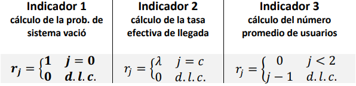
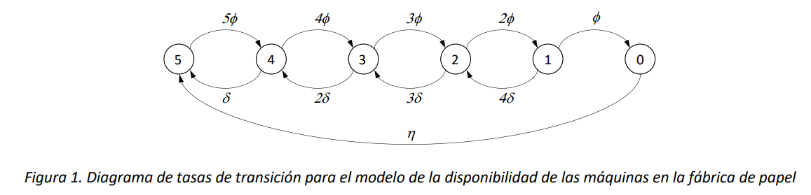
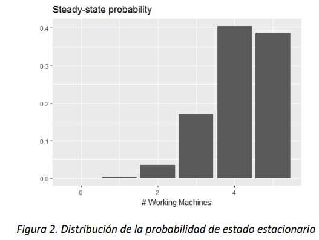
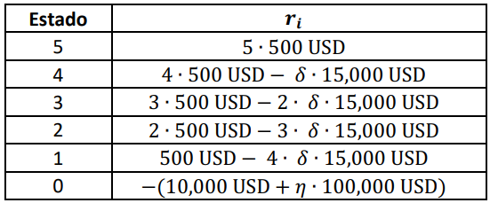
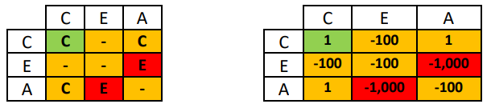
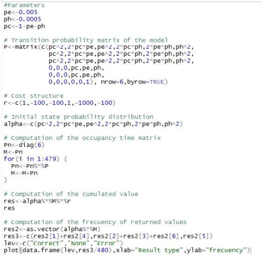

Costos en cadenas de Markov#
En este documento se introduce el concepto de estructura de costo (reward structure, en inglés), que proporciona un enfoque muy general para la definición de indicadores de utilidad que pueden ser cuantificados a partir de los índices de rendimiento calculados con cadenas de Markov. A través de ejemplo se caracterizan primero los tipos fundamentales de costos que pueden ser asociados a los elementos de una Cadena de Markov, y luego se muestran las alternativas de análisis y su aplicación.
Introducción#
En este contexto, el término estructura de costos hace referencia a un enriquecimiento de los elementos de una Cadena de Markov, tales como estados y transiciones, que permite agregar una nueva capa de información cuantitativa útil para la realización de análisis económicos acerca del desempeño del sistema.
Como ejemplo, consideramos un sistema que pueda ser modelado a través de una cola \(M/M/1/c\), con tasa de llagada \(\lambda\) y de servicio \(\mu\), por ejemplo, una tienda con un solo empleado y capacidad finita. Como ya sabemos, varios índices o indicadores que pueden ser calculados a partir del análisis del modelo permiten caracterizar el desempeño del sistema frente a aspectos de varia naturaleza. Por ejemplo:
La probabilidad de que el sistema esté vacío es un indicador del nivel de utilización del empleado.
La diferencia entre la tasa del proceso de llegada y la tasa efectiva es un indicador de la cantidad de demanda insatisfecha.
El tiempo promedio de espera de los usuarios que se encuentran en el sistema es un indicador de la ineficiencia del servicio y por ende de la insatisfacción del usuario.
Cada uno de estos índices se evalúa a partir del análisis de la distribución de probabilidad de estado de la cola que modela el sistema, sea esa en el transitorio, en el cual se denota con \(\overrightarrow{\pi}(t)\), o en el estado estacionario (para este modelo siempre existe), en el cual esta denotada como \(\overrightarrow{\pi}\). En particular, si el espacio de estados es el conjunto \(S = \{ 0,1,\ldots,c\}\) los tres índices que se definen arriba se obtienen de la siguiente manera:
La probabilidad de que el sistema se encuentre vacío en el tiempo \(t\) (transitorio) se calcula a partir del vector \(\overrightarrow{\alpha} \bullet e^{\mathbb{Q}t}\ \)donde \(\overrightarrow{\alpha}\) es el vector de la distribución inicial de probabilidad, y \(\mathbb{Q}\) la matriz de las tasas de transición del proceso de nacimiento y muerte que representa la evolución del número de usuarios en la cola. Siendo el estado 0, que corresponde al sistema vacio y el primero en el espacio de estados ordenado, la primera componente del vector \(\overrightarrow{\alpha} \bullet e^{\mathbb{Q}t}\) corresponde a \(\pi_{0}(t)\), siendo ella la probabilidad de que el sistema esté vacío al tiempo \(t\). Si el análisis se hace en el estado estacionario, el indicador será el valor de \(\pi_{0}\), primer elemento del vector de la distribución de probabilidad estacionaria.
La demanda insatisfecha se obtiene a partir de la probabilidad de que un usuario no pueda ingresar al sistema por falta de capacidad. Por lo cual, análogamente al caso anterior, el último elemento del vector \(\overrightarrow{\alpha} \bullet e^{\mathbb{Q}t}\), que corresponde a la probabilidad de bloqueo de la cola \(\pi_{c}(t)\) en el tiempo \(t\) y el último elemento del vector de la distribución de probabilidad estacionara \(\pi_{c}\) son las cantidades a estimar para el análisis en el estado transitorio y estacionario, respectivamente. La demanda insatisfecha en el estado estacionario es \(\lambda \cdot \pi_{c}\).
La eficiencia del servicio en el estado transitorio puede ser calculada como \(W_{q}(t)\) en un análisis transitorio al tiempo \(t\) y como \(W_{q}\) en el estado estacionario. Estos tiempos pueden ser calculados con la ley de Little, sea en el transitorio como para el estado estacionario (una vez se conozca el valor de \(L_{q}(t)\) y de \(L_{q}\), promedios de usuarios en espera), como sigue:
Los promedios \(L_{q}(t)\) y de \(L_{q}\) se obtienen utilizando la distribución de probabilidad de estado apropiada para el caso en cuestión, como sigue:
Es interesante observar que cada uno de los indicadores tiene diferente naturaleza y es dimensionalmente diferente a los demás. El primero es una probabilidad, entonces es un número puro; el segundo es una tasa, con dimensiones de usuarios por unidad de tiempo, y el tercero es un tiempo. Independientemente de su naturaleza, el cálculo de los indicadores tiene aspectos comunes que son importantes resaltar. En efecto, para obtener cada uno de ellos se necesita calcular un promedio que involucra la distribución de la probabilidad de estado. Por cada indicador se asocia un valor a cada estado, y ese valor es utilizado en un promedio ponderado por la distribución de probabilidad.
Por ejemplo, si denotamos con \(r_{j}\) el valor que se asocia al estado \(j \in 0,1,\ldots,c\) para los indicadores anteriormente definidos, vemos que se utilizaron (de manera implícita) las siguientes asignaciones de valores a los estados.

En cada uno de los casos anteriores, el cálculo de la cantidad deseada es igual al cálculo de los siguientes promedios
Según se quiera realizar el análisis en el transitorio o en el estado estacionario, respectivamente.
El vector \(\overrightarrow{r} = (r_{0},r_{1},\ldots.)\) define lo que se conoce como estructura de costo sobre los estados del modelo de la Cadena de Markov. Estrictamente hablando, es necesario definir un valor para cado estado, aun cuando quizá sean todos cero excepto por un solo estado, como en el caso del indicador 1 arriba. La ventaja de introducir el concepto de estructura de costo es que proporciona una generalización útil para muchos tipos de análisis, aparentemente de diferente naturaleza. Supondremos que en una estructura de costo pueda haber costos con valores positivos y negativos, según sea necesario para el indicador que se pretende calcular. La expresión en inglés reward structure es más precisa que la versión en español, ya que el término reward (premio) en inglés no tiene necesariamente una connotación positiva, y pueden darse rewards positivos (que pueden representar ganancias) y negativos (que modelan pérdidas o costos).
Ejemplo 1
Para el sistema que se modela con la cola \(M/M/1/c\), si cada cliente que ingresa al sistema realiza en promedio una compra de \(\$ 4,000\), ¿cuál es el valor diario del ingreso por ventas? Asuma que la tasa de llegada es \(\lambda = 12horas^{- 1}\ \), que cada cliente necesita un tiempo promedio de atención de \(6\) minutos promedio, y que solo 5 clientes pueden entrar a la tienda por su reducida capacidad.
En este caso, se define una estructura de costos que por cada estado indique una ganancia. Si el sistema está vacío, no se genera ganancia, entonces \(r_{0} = 0\). Si un cliente está en el sistema, este completará el servicio con una tasa \(\mu = \frac{1}{6\ minutos} = 10horas^{- 1}\), y con esa misma tasa el vendedor ganará \(\$ 4,000\). Entonces, para el estado 1 podemos definir en la estructura de costo que \(r_{1}\)=\(\ \mu \bullet \$ 4,000 = \frac{\$ 40,000}{hora}\). Si en la tienda hay más de un usuario, igualmente esos terminan sus compras a una tasa \(\mu\) ya que los servicios son secuenciales, entonces se definirá \(r_{i}\)=\(\frac{\$ 40,000}{hora}\) por todo estado que no sea aquel que corresponda al sistema vacío. Suponiendo que el sistema está en estado estacionario (lo cual no será siempre verdadero, ya que cada mañana empieza en un estado particular que no coincide al equilibrio, es decir el estado vacio), es posible calcular el promedio como sigue:
Para la cola \(M/M/1/c\) el valor de \(\pi_{0}\) es dado por:
Siendo \(\rho = \lambda/\mu = 12/10 = 1.2\). Entonces será:
Y el valor promedio de la ganancia horaria es \(\$ 40,000/hora(1 - \pi_{0}) = \$ 40,000/hora*(1 - 0.1) = \$ 36,000/hora\). Por ende, en un día de ventas se ganarán en promedio \(\frac{\$ 36,000}{hora} \cdot 8\frac{horas}{día}\ = \frac{\$ 288,000}{día}\).
Para calcular las ganancias promedio diarias podemos determinar las ganancias promedio horarias y multiplicar por el número de horas de trabajo de la tienda (supongamos sean 8).
Nota
Si la cola que modela el sistema hubiese sido una \(M/M/1\) (capacidad infinita, el cálculo habría sido mucho más sencillo, ya que, en una cola estacionaria sin bloqueo, la tasa de salida del usuario debe necesariamente corresponder a la tasa de llegada. Por esta razón, la tasa horaria de ganancia por ventas habría sido igual a la tasa de llegada \(\lambda\) (en horas) por el valor de la venta unitaria.
A la hora de definir estructuras de costos, es posible utilizar a la vez valores que representan el resultado de diferentes desempeños del sistema, por ejemplo, pérdidas y ganancias. Supongamos que se asigna un valor de \(\$ 1,000\) por cada unidad de tiempo que un cliente pasa en espera en la tienda que se analiza en el Ejemplo 1. En este caso, dicho valor sería un costo para el sistema. Entonces, al valor diario esperado se deberá restar el costo de la espera, lo cual podemos calcular a partir de las probabilidades en estado estable a través del siguiente promedio:
En la expresión anterior, el promedio es calculado sobre los estados en los cuales hay clientes que esperan en cola, es decir los estados \(2,\ 3,\ldots,\ \ c\). En el estado \(j\), \(2 \leq j \leq c\), exactamente \(j - 1\) clientes estarán esperando (y uno en servicio). Nótese que finalmente el promedio se reduce a la multiplicación entre el valor horario de la espera \(\left( \frac{\$ 1,000}{hora} \right)\) y \(L_{q}\), el numero promedio de clientes en espera es el estado estacionario.
Es posible obtener este mismo valor con un razonamiento diferente, a partir de \(W_{q}\), el tiempo promedio de espera de cada usuario en el estado estacionario. Si cada usuario que entra al sistema espera en promedio un tiempo \(W_{q}\), entonces el costo de la espera, por cada cliente que ingrese al sistema, será \(\frac{\$ 1000}{hora} \bullet W_{q}\). Ahora bien, en el estado estacionario, el número de clientes que entra al sistema cada hora (y que sale de ello, por el equilibrio del estado estable) es simplemente dado por la tasa efectiva de llegada \(\lambda_{eff} = \lambda(1 - \pi_{c})\). Entonces, el promedio horario será dado por el total de los tiempos de espera de los clientes, así como sigue:
Donde la última equivalencia se obtiene por la ley de Little.
Ejemplo 2
En una fábrica de papel hay \(n = 5\) máquinas que en paralelo muelen la madera que entra al proceso de transformación. Cada máquina es capaz de procesar en promedio \(\mu = 5\) toneladas de materia prima por hora. El proceso de producción es continuo las 24 horas. Sin embargo, cada máquina puede de manera independiente sufrir una parada debido a fallas técnicas, que ocurren de acuerdo con un proceso de Poisson de tasa \(\phi = \frac{0.01}{hora}\). Cuando una máquina para, estará sujeta a un proceso de reparación, que se demora en promedio \(\delta^{- 1} = 210\ minutos.\ \)El valor de la reparación de una máquina es en promedio \(15,000\ \text{USD}\). Por cada tonelada de madera molida, el proceso productivo genera una cantidad de producto final cuyo valor corresponde a \(500\ \text{USD}\).
Si todas las maquinas llegaran a parar debido a las fallas, la producción de toda la planta sería suspendida y, además de la falta de ingreso, se incurriría en una perdida (debida a los costos fijos) de \(10,000\ \text{USD}\) por hora de suspensión. Para retomar la producción después de una parada total, es necesario realizar además de las reparaciones una recalibración de todas las máquinas. Estos dos procesos requieren en promedio un tiempo de \(\eta^{- 1} =\) 8 horas, después del cual toda la planta vuelve a ser operativa. La recalibración acarrea un costo adicional de \(100,000\ \text{USD}\) en insumos necesarios para la reactivación de las máquinas. ¿Cuál es en el estado estacionario el promedio del valor horario generado por la planta?
Si todos los tiempos son modelables como variables aleatorias con distribución exponencial, este sistema puede ser modelado como una Cadena de Markov en tiempo continuo. En cuanto a la variable de estado, es necesario contar el número de máquinas en los diferentes estados, porqué existe un estado (cuando todas las máquinas están dañadas), que introduce una sincronización entre las máquinas (se separan y reconfiguran todas a la vez). Si el sistema no tuviese dicha sincronización, sería posible modelar el estado de una sola máquina, ya que el estado total del sistema sería el estado de 5 máquinas totalmente independientes entre sí.
Observamos que es suficiente definir la cadena de Markov en tiempo continuo \(\{ X(t),t \geq 0\}\) con la sola variable \(X(t) = Número\ de\ máquinas\ en\ operación\ al\ tiempo\ t\), ya que el numero de máquinas dañadas al tiempo \(t\) es igual a \(5 - X(t)\), siempre que se conoce \(X(t)\). En la Figura 1 se ilustra el diagrama de tasas de transición para el modelo.

La cadena es finita e irreducible, por lo cual el modelo alcanza en el largo plazo un estado estacionario. El siguiente código R© calcula el vector \(\overrightarrow{\pi}\) de la distribución de la probabilidad de estado en el largo plazo, solucionando el sistema de ecuaciones lineales conformado por \(\overrightarrow{\pi}\mathbb{\bullet Q =}\overrightarrow{0}\) y la condición de normalización \(\sum_{j = 0}^{5}{\pi_{j} = 1}\).
Las probabilidades en el estado estacionario son reportadas en la siguiente gráfica (producida por el mismo script de R© anterior).

Con estas probabilidades, podemos calcular el valor generado por la fábrica, definiendo la siguiente estructura de costos. Si la fábrica está en el estado \(i\ \)por un intervalo de tiempo de duración \(t\) (en horas)\(,\ i > 0\), produce un valor igual a \(i \bullet t \bullet 500\ \text{USD}\). Si máquina está en el estado \(j,\ \ 0 < j < 5\), se ocasiona el costo de la reparación \((15,000\ \text{USD})\) cada vez que una de las máquinas dañadas completa su reparación, lo cual ocurre con una tasa de \(j \bullet \delta\). Si la máquina permanece en el estadio 0 (producción parada) por un intervalo de tiempo de duración \(t\ \)(en horas) la fábrica acumula una pérdida de \(t \bullet 10,000\ \text{USD}\). Además, cuando abandona ese estado (lo cual ocurre con una tasa \(\eta\), incurre en el costo de 100,000USD. Por ende, la estructura de costos para el problema es la siguiente:

Nótese que, en la tabla anterior, todos los valores de \(r_{i}\ \) son tasas, es decir que son dimensionalmente coherentes, en cuanto a que todos \(\frac{USD}{hora}\). El primero es el valor horario generado por las máquinas en funcionamiento, el segundo, tercero, cuarto y quinto son la diferencia entre el valor horario generado por las máquinas en funcionamiento menos lo que se paga (por hora) al reparar las que estén dañadas, y el ultimo es la suma del valor de la perdida horaria más lo que se paga (por hora) por reparación y recalibración cuando el sistema pare completamente. Entonces, el valor calculado con la expresión (1) es el promedio del valor generado en estado estable, cuando se utilicen las probabilidades reportadas en la gráfica 2, o en el transitorio si se utilizaran las probabilidades \(\pi_{j}(t)\)
Nota
Es muy importante tener en cuenta que los valores que se suman deben tener las mismas dimensiones, de lo contrario el valor calculado con la expresión (1) no tendrá sentido.
Ejemplo 3
Considere un sistema de control a bordo de un avión, que incluye 2 procesadores que trabajan en paralelo para asegurar un control fiable del sistema. La redundancia está utilizada para garantizar un nivel protección en contra de las fallas de los equipos. Existen dos tipos distintos de fallas:
- Fallas del hardware, de naturaleza persistente, que determinan la parada de la máquina y la falta de resultado de la computación.
- Fallas del software, de naturaleza transitoria, ya que sus efectos se observan como errores en los resultados de un cálculo y en la computación siguiente desaparecen.
Cada computación (por ejemplo, cálculo de una altitud, de una velocidad del viento, o de la distancia con otro avión) es simultáneamente ejecutada en los procesadores disponibles y dura un tiempo fijo \(\tau = 1\ minuto\). Después de este tiempo se determina el resultado que se transmite, según las reglas definidas en la siguiente tabla, donde C, E y A denotan resultado correcto, erróneo y ausente, respectivamente, para la computación de cada procesador.

En la tabla a la izquierda arriba, el elemento de la matriz es el valor que se reporta como resultado final, y el código color indica el potencial peligro que dicho resultado implica para el vuelo, siendo el hecho que se reporte un valor equivocado más grave que el hecho de no reportar un valor. Cada una de las situaciones anteriores tiene asociado un valor para el sistema, según la tabla arriba a la derecha. Se quiere determinar el valor total acumulado por el sistema en un vuelo de 8 horas.
Es posible modelar el resultado de la computación \(n\)-ésima a través de una CMTD. Definimos como estado de la cadena \(\{ X_{n} = ({NC}_{n},{NE}_{n},{NA}_{n}),n \geq 1\}\) donde\(\ {NC}_{n},{NE}_{n}\) y \({NA}_{n}\) son el número de resultado correctos, erróneos y ausentes producidos en la \(n\)-ésima computación por los 2 procesadores. El espacio de estados \(S_{X}\) está conformado por todos los vectores de tres componentes enteras no-negativas tales que la suma de esas es 2:
Nótese que es posible definir una variable de estado más sencilla, que por ejemplo solo tenga las primeras dos componentes, ya que la tercera es totalmente dependiente de las primeras dos. Es decir, si sabemos que en una computación hay exactamente un resultado correcto y no hay resultados erróneos, necesariamente habrá un computador que no está produciendo resultado alguno. Usar dicha variable no cambiaría el modelado en términos de número de estados y tampoco afectaría las transiciones entre estados, así que en este caso es preferible especificar las tres componentes y ser más claros teniendo toda la información explicita.
También sería posible elegir una variable de estado de dos componentes donde cada componente es el tipo de resultado que un computador retorna, p.e. \((C,C)\). Esto nos daría 9 posibles estados, que se obtienen componiendo los tres resultados posibles de cada una de las dos computaciones. Dado que los estados simétricos (como por ejemplo \((E,C)\) y \((C,E)\) tienen el mismo valor frente a la métrica que se quiere evaluar es preferible usar una variable que cuente el número de resultados de cada tipo.
Sea \(p_{E}\) la probabilidad de que en el lapso que toma una computación (el \(\tau\)) un procesador (que no tuvo una falla hardware) sufra una falla software y \(p_{H}\) la probabilidad de que sufra una falla hardware. Por los datos que se tienen sobre el sistema, \(p_{E}\) y \(p_{H}\) corresponden a la probabilidad de que un procesador, en una computación, retorne un resultado equivocado (debido a la ocurrencia de una falla del software) o no retorne resultado (debido a una falla hardware), respectivamente. La probabilidad de que el resultado de la computación sea correcto se denota con \(p_{C} = 1 - p_{E} - p_{H}\). Esta última probabilidad aplica solo para los computadores que no sufrieron fallas hardware, ya que, si un computador la sufrió, seguramente seguirá fallado y no reportará resultado alguno. Las probabilidades de transición entre estados son las que se muestran en la expresión siguiente:
Por cada uno de los estados, los costos son aquellos que se reportan en la matriz ilustrada anteriormente, por lo cual, la estructura de costos está representada por el siguiente vector.
Para calcular el valor acumulado en un vuelo de 8 horas (lo cual corresponde a 480 minutos), podemos calcular cuantas veces se emite, en 8 horas, una pareja cualquiera de resultados de la computación. Esta información se obtiene calculando la matriz de tiempos de ocupación \(\mathbb{M}^{(480)}\). Multiplicando dicha matriz por el vector \(\overrightarrow{r}\), se calcula un vector de valores, uno por cada posible estado inicial del sistema. Nótese que no es correcto asumir ningún estado inicial en particular, ya que, si bien los dos computadores pueden iniciar el vuelo sin fallas, desdé la primera computación es posible obtener cualquiera de las configuraciones representadas en los 6 estados del modelo. Por esta razón, utilizamos el siguiente vector de distribución de probabilidades iniciales de la cadena:
Por lo tanto, el valor acumulado en un vuelo de 8 horas será dado por la siguiente expresión:
Nótese que a través del vector \(\overrightarrow{\alpha}\) se está en efecto modelando el resultado de la primera computación, así que ahora se calcula \(\mathbb{M}^{(479)}\) y no más \(\mathbb{M}^{(480)}\).
El siguiente código R© realiza el cálculo del valor acumulado por unos posibles valores de las probabilidades \(p_{E}\) y \(p_{H}\), y produce una gráfica de la frecuencia con la cual cada uno de los posibles resultados (C, A, E) es finalmente reportado como resultado de la ocurrencia de las fallas y de la lógica de control del sistema.
